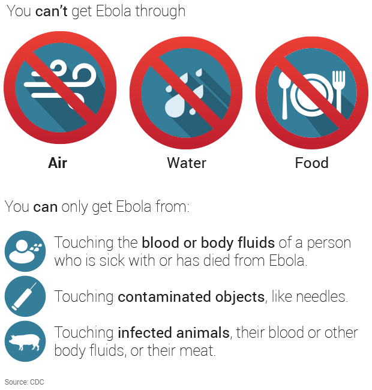

The Ebola Virus spreads through transfer of bodily fluids such as blood, saliva, semen, and vomit.
The Ebola Virus is very hard for the immune system to fight off because it directly attacks guard and memory cells, preventing the immune system from mounting a defense against it and fight it off.
As of today, there is no approved cure or vaccine for the Ebola virus. A patient can only recover from it if their immune system is able to fight it off. To maximize the chance of survival, several methods are used.
Because death is mostly caused by fluid loss, patients infected with the ebola virus are put on IVs delivering fluid into their bloodstream and preventing blood pressure from dropping to dangerous levels. Oxygen therapy is also used to make sure that the body can get enough oxygen if the lungs are damaged. Blood transfusions are used to resupply lost bodily fluids. Any infections are treated to prevent further damage.
In the end, no drugs can fight off or suppress the virus and it is up to the immune system of the patient to produce more T-cells and memory cells that are able to produce antibodies to disable and destroy ebola viruses in the bloodstream.
Even after recovery, the patient may still be effected for the rest of their lives. The weight lost while infected might never be recovered, and weakness may persist. Chronic inflammation or blindness are possible lasting effects. Even if not in the bloodstream, the ebola virus can still be spread through semen or breastmilk for years after recovery.
Ebola only spreads through the transfer of bodily fluids, so it can be prevented by good hygiene and safety practices, such as washing hands, keeping surfaces clean, and using needles safely. Especially in developing countries, medical facilities often cannot meet these standards, allowing for ebola to spread easily; in countries with more resources, patients should be quarantined to prevent the further spread of ebola.